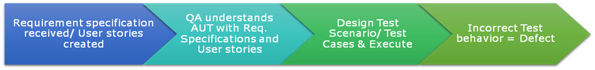
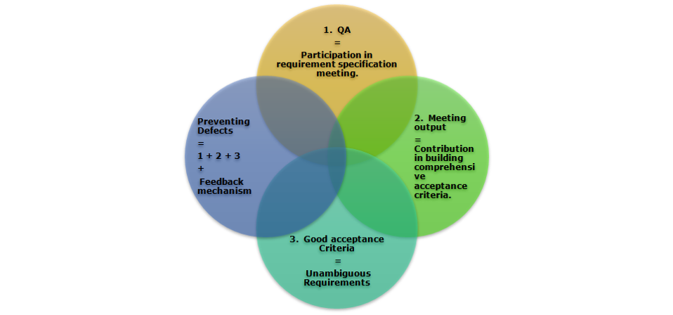
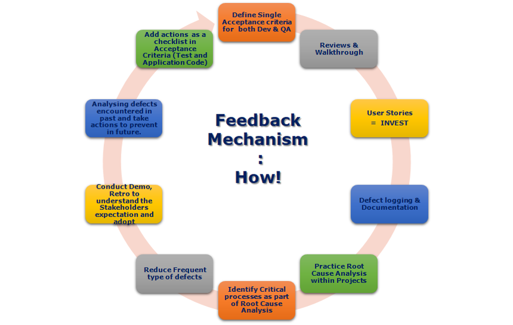

Finding Defects V s Preventing Defects
Finding defects involves verifying after the software is created. Fixing defects involves re-doing the faulty code and then re-testing everything to ensure that the fix is in place and that nothing else got broken. This takes time and money. Preventing defects is easier, and needn’t take a lot of upfront analysis either if certain practices are followed.
Prevention is better than cure. Preventing the defects before the product is built (coding phase) helps deliver business value earlier.
Even though the cost of fixing a defect may not be known upfront, a defect is still essentially waste!
To be Agile means to be able to respond to change. Highly functional Agile teams are cross-functional in nature. Moreover, the value of the QA is no longer measured by the number of defects found, but rather in the number of Acceptance Criteria identified and provided upfront for the developers to cater to.
The Agile Team is more responsible in ensuring that defects are prevented, by finding the root cause and using the findings to revise the acceptance criteria and acceptance tests and making sure that the feedback mechanism is followed.
The “Finding Defects” Mindset:

- QA understands the application under test with the help of Requirement specification and user stories.
- Designs test scenarios & test cases as per acceptance criteria.
- Any deviation to Expected behavior is labelled as ‘Defect’
- Defects can be found at – Unit testing, System testing, End to End testing and Regression Testing and Maintenance phase.
- Requires rework and hence delay in delivery (a cost to fix and the cost of delay).
The Preventing Defects Mindset:
- Defects can be prevented at – Requirement Analysis, Design, Implementation phases
- Identify and Supply the Acceptance Criteria during Requirements Analysis, Design, and before and during Implementation
- Identify the root cause of defects - earlier found defect(s) via Testing.
- Analyse if the defect could have been avoided and suggest revised acceptance criteria and better tests.
- Put a process in place to avoid similar defects surfacing- share the feedback with the team.
Why to Prevent Defects:
- A lot lesser cost - if one revises and provides better quality acceptance criteria as part of the stories, then developers can cater to these, and add automated verification for faster feedback
- Lesser repetitions of the whole cycle of code, review, deploy, test.
- Enhanced Quality!
How to Prevent Defects:

- QA to be part of requirement specification meeting.
- Helping the team to build a number of comprehensive acceptance criteria.
- This will help to clear out the specific requirement and any ambiguity within.
- Ensuring that defects are addressed via the feedback mechanism (see below).
Feedback Mechanism - Why and How:
Quick feedback on the well-being of the application is of huge importance to support continuous delivery. Therefore, a process and a mechanism by which we can obtain feedback quickly needs to be created.One way of getting quick feedback is by increasing the number of unit tests, integration tests and API tests, and then running them frequently as part of the Continuous Integration process. These low level tests will provide a safety net to ensure the code is working as intended and helps prevent defects escaping in other layers of testing. Unit tests form the foundations for test automation at higher levels.

A Few more Techniques: • Define Single Quality Gates & Acceptance criteria for each Phase for both Dev & QA
• Reviews & Walk-through – To reduce most frequent Type of Defects
• User Stories to follow the INVEST Principle
• Defect logging & Documentation
• Practice Root Cause Analysis within Projects
• Identify Critical processes as part of Root Cause Analysis
• Reduce Frequent type of defects within Requirements / Specification / User stories - Acceptance criteria
• Conduct Demo, Retrospection to understand the Stakeholders expectation and adopt
• Analyzing the defects that were encountered in past and taking specific actions to prevent them occurring in future
.• Add actions / Critical Processes as a checklist in Acceptance Criteria (Test case preparation / Code Review (Test and Application Code both))